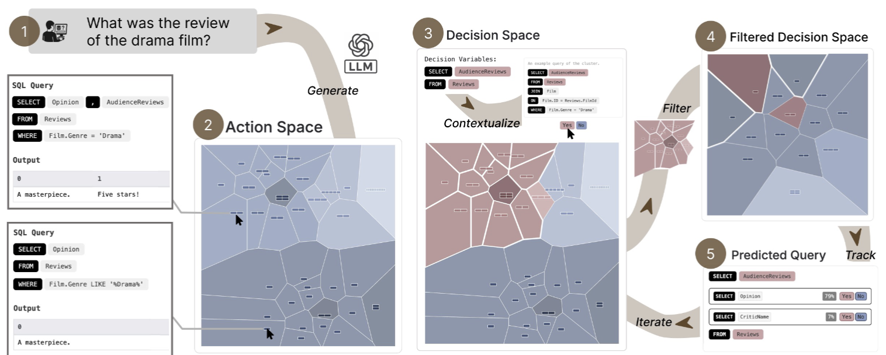
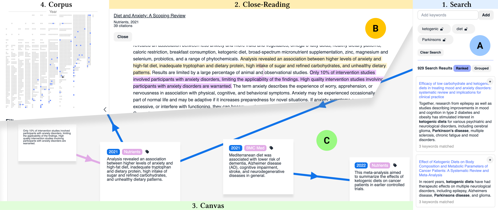
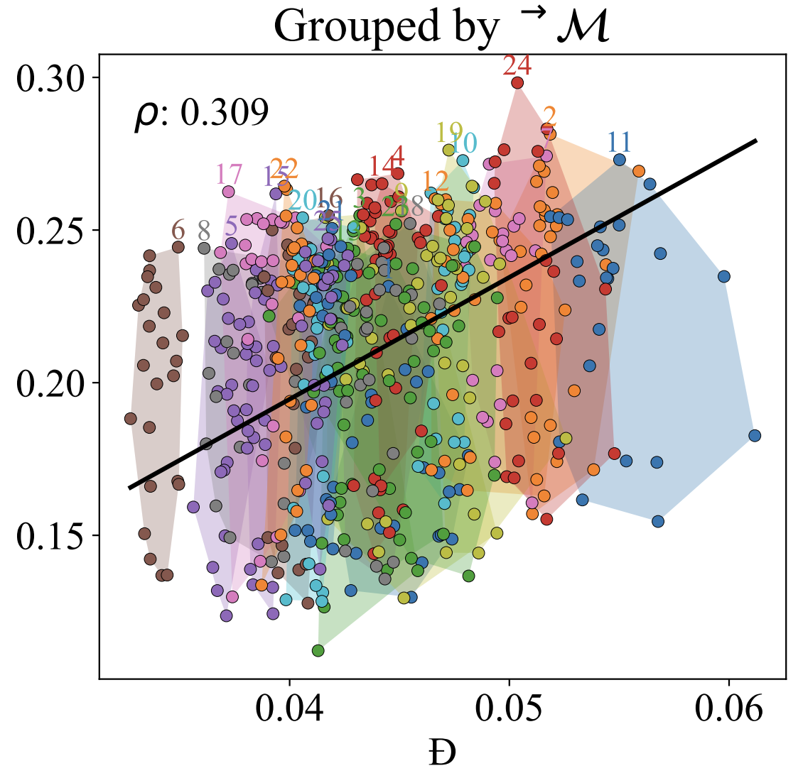
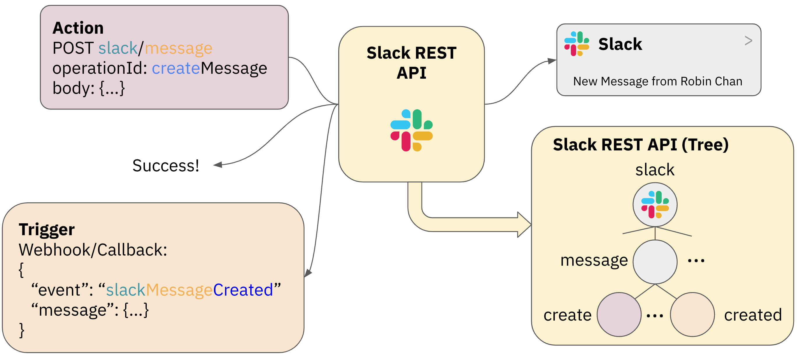
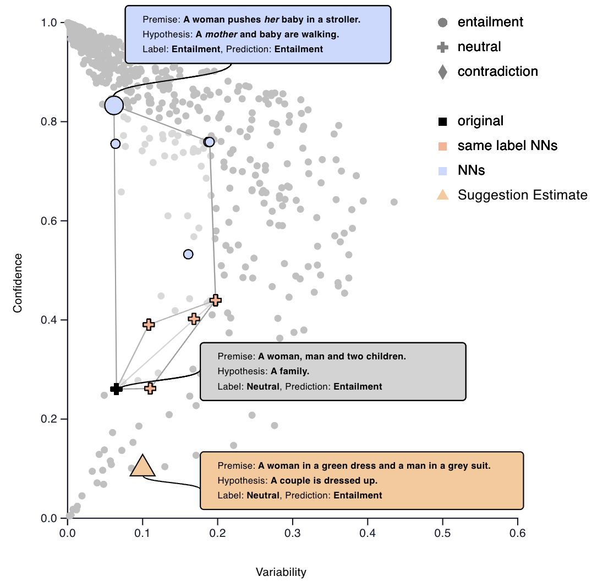

I'm a PhD student at the Institute for Machine Learning at ETH Zürich, where I'm advised by Prof. Ryan Cotterell at Rycolab.
My research focuses on inference-time language model control, integrating methods from probabilistic inference and human-computer interaction.
I'm quite active in the GenLM research consortium, where we are building an open-source ecosystem for language model probabilistic programming.
Before that, I obtained a master's degree in data science from ETH Zürich, graduating with a thesis on controlled LLM code generation at IBM Research Europe (ZRL).
We won a best paper award at CHI'26 (top 1% of submissions)! 🏆
We just published a new preprint about ensembling language models with sequential Monte Carlo with the people at GenLM!
One paper about interactive ambiguity resolution in natural language interfaces was accepted at CHI 2026 (main).
Thanks to the team; preprint available here!
I got an outstanding reviewer award at NeurIPS'25 🏆
One paper accepted at IEEE VIS 2025 in Vienna — congratulations to the team!
Our paper Finding Needles in Document Haystacks: Augmenting Serendipitous Claim Retrieval Workflows was accepted at CHI 2025 in Yokohama, Japan — congratulations to the team!
Our paper A Design Space for Intelligent Dialogue Augmentation was accepted at ACM IUI 2025! I will be presenting it in Cagliari in March. Thanks to all co-authors!
The paper we wrote at IBM Research on API integration with LLMs was accepted at EMNLP 2024 (Industry Track) — thanks to all co-authors! My colleague Thomas Gschwind from IBM Research will be presenting it in Miami in November.
Our paper On Affine Homotopy between Language Encoders was accepted at NeurIPS 2024. I will be presenting it in Vancouver in December. Thanks to all co-authors!
We gave a tutorial about the representational capacity of neural language models at ACL 2024 in Bangkok. Check out our interactive tutorial webpage!
Two papers I co-authored were accepted at ACL 2024!
Started a PhD at ETH Zürich, co-advised by Prof. Menna El-Assady and Prof. Ryan Cotterell! 🎉
Together with Katya Mirylenka, we will give a talk at Zurich-NLP about our work at IBM Research, at the ETH AI Center. RSVP here!
Our paper on counterfactual sample generation was accepted at ACL. I will be presenting it in Toronto in a few days! Check out our blog post about the paper!
Ensembling Language Models with Sequential Monte Carlo
Robin Chan,
Tianyu Liu,
Samuel Kiegeland,
Clemente Pasti,
Jacob Hoover Vigly,
Timothy J. O'Donnell,
Ryan Cotterell,
Tim Vieira
Preprint, 2026 | pdf
Abstract
Practitioners have access to an abundance of language models and prompting strategies for solving many language modeling tasks; yet prior work shows that modeling performance is highly sensitive to both choices.
Classical machine learning ensembling techniques offer a principled approach: aggregate predictions from multiple sources to achieve better performance than any single one.
However, applying ensembling to language models during decoding is challenging: naively aggregating next-token probabilities yields samples from a locally normalized, biased approximation of the generally intractable ensemble distribution over strings.
In this work, we introduce a unified framework for composing K language models into f-ensemble distributions for a wide range of functions f: ℝ≥0K → ℝ≥0.
To sample from these distributions, we propose a byte-level sequential Monte Carlo (SMC) algorithm that operates in a shared character space, enabling ensembles of models with mismatching vocabularies and consistent sampling in the limit.
We evaluate a family of f-ensembles across prompt and model combinations for various structured text generation tasks, highlighting the benefits of alternative aggregation strategies over traditional probability averaging, and showing that better posterior approximations can yield better ensemble performance.

PleaSQLarify: Visual Pragmatic Repair for Natural Language Database Interfaces
Robin Chan,
Rita Sevastjanova,
Menna El-Assady
Proceedings of the ACM CHI Conference on Human Factors in Computing Systems 2026 | pdf
Best Paper Award (top 1% of submissions) 🏆
Abstract
Natural language database interfaces broaden data access, yet they remain brittle under input ambiguity.
Standard approaches often collapse uncertainty into a single query, offering little support for mismatches between user intent and system interpretation.
We reframe this challenge through pragmatic inference: while users economize expressions, systems operate on priors over the action space that may not align with the users'.
In this view, pragmatic repair—incremental clarification through minimal interaction—is a natural strategy for resolving underspecification.
We present PleaSQLarify, which operationalizes pragmatic repair by structuring interaction around interpretable decision variables that enable efficient clarification.
A visual interface complements this by surfacing the action space for exploration, requesting user disambiguation, and making belief updates traceable across turns. In a study with twelve participants, PleaSQLarify helped users recognize alternative interpretations and efficiently resolve ambiguity.
Our findings highlight pragmatic repair as a design principle that fosters effective user control in natural language interfaces.

Finding Needles in Document Haystacks: Augmenting Serendipitous Claim Retrieval Workflows
Moritz Dück,
Steffen Holter,
Robin Chan,
Rita Sevastjanova,
Menna El-Assady
Proceedings of the ACM CHI Conference on Human Factors in Computing Systems, 2025 | pdf
Abstract
Preliminary exploration of vast text corpora for generating and validating hypotheses, typical in academic inquiry, requires flexible navigation and rapid validation of claims.
Navigating the corpus by titles, summaries, and abstracts might neglect information, whereas identifying the relevant context-specific claims through in-depth reading is unfeasible with rapidly increasing publication numbers.
Our paper identifies three typical user pathways for hypothesis exploration and operationalizes sentence-based retrieval combined with effective contextualization and provenance tracking in a unified workflow.
We contribute an interface that augments the previously laborious tasks of claim identification and consistency checking using NLP techniques while balancing user control and serendipity.
Use cases, expert interviews, and a user study with 10 participants demonstrate how the proposed workflow enables users to traverse literature corpora in novel and efficient ways.
For the evaluation, we instantiate the tool within two independent domains, providing novel insights into the analysis of political discourse and medical research.

On Affine Homotopy between Language Encoders
Robin Chan,
Reda Boumasmoud,
Anej Svete,
Yuxin Ren,
Qipeng Guo,
Zhijing Jin,
Shauli Ravfogel,
Mrinmaya Sachan,
Bernhard Schölkopf,
Menna El-Assady,
Ryan Cotterell
Advances in Neural Information Processing 38 (NeurIPS), 2024 | pdf
Abstract
Pre-trained language encoders -- functions that represent text as vectors -- are an integral component of many NLP tasks.
We tackle a natural question in language encoder analysis: What does it mean for two encoders to be similar? We contend that
a faithful measure of similarity needs to be intrinsic, that is, task-independent, yet still be informative of extrinsic
similarity -- the performance on downstream tasks. It is common to consider two encoders similar if they are homotopic, i.e.,
if they can be aligned through some transformation. In this spirit, we study the properties of affine alignment of language
encoders and its implications on extrinsic similarity. We find that while affine alignment is fundamentally an asymmetric notion of
similarity, it is still informative of extrinsic similarity. We confirm this on datasets of natural language representations. Beyond
providing useful bounds on extrinsic similarity, affine intrinsic similarity also allows us to begin uncovering the structure of the
space of pre-trained encoders by defining an order over them.

Adapting LLMs for Structured Natural Language API Integration
Robin Chan,
Katsiaryna Mirylenka,
Thomas Gschwind,
Christoph Miksovic-Czasch,
Paolo Scotton,
Enrico Toniato,
Abdel Labbi
Proceedings of EMNLP: Industry Track, 2024 | pdf
Abstract
Integrating APIs is crucial for enterprise systems, enabling seamless application interaction within workflows.
However, the vast and diverse API landscape makes combining calls based on user intent a significant challenge.
Existing methods rely on Named Entity Recognition (NER) and knowledge graphs, but struggle with control flow structures like
conditionals and loops. We propose a novel framework that leverages the success of Large Language Models (LLMs)
in code generation for natural language API integration. Our approach involves fine-tuning an LLM on automatically generated
API flows derived from services' OpenAPI specifications. This aims to surpass NER-based methods and compare the effectiveness
of different tuning strategies. Specifically, we investigate the impact of enforcing syntax through constrained generation or
retrieval-augmented generation. To facilitate systematic comparison, we introduce targeted test suites that assess the generalization
capabilities and ability of these approaches to retain structured knowledge. We expect to observe that fine-tuned LLMs can: (a) learn
structural constraints implicitly during training, and (b) achieve significant improvements in both in-distribution and out-of-distribution
performance.

Which Spurious Correlations Impact Reasoning in NLI Models? A Visual Interactive Diagnosis through Data-Constrained Counterfactuals
Robin Chan,
Afra Amini,
Menna El-Assady
Proceedings of ACL: System Demonstrations, 2023 | pdf
Abstract
We present a human-in-the-loop dashboard tailored to diagnosing potential spurious features that NLI models rely on for predictions.
The dashboard enables users to generate diverse and challenging examples by drawing inspiration from GPT-3 suggestions.
Additionally, users can receive feedback from a trained NLI model on how challenging the newly created example is and make refinements based on the feedback.
Through our investigation, we discover several categories of spurious correlations that impact the reasoning of NLI models, which we group into three categories:
Semantic Relevance, Logical Fallacies, and Bias. Based on our findings, we identify and describe various research opportunities, including diversifying
training data and assessing NLI models' robustness by creating adversarial test suites.
{kind=link}